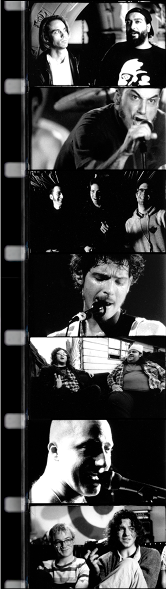

Music
HYPE! was produced between 1992-94, it was filmed in Super-16mm film with three cameras. It took 9 months to edit. etc. etc. To be written. This paragraph is not written. It will rock. It wil be amazing. The bands were recorded with a 24-track digital mobile recording truck parked in the alleys behind each club. Because this is a sound-intensive documentary, we relied heavily on the help of a few friendly Hollywood sound professionals to do the sound etc..
Credits
Director Bio
